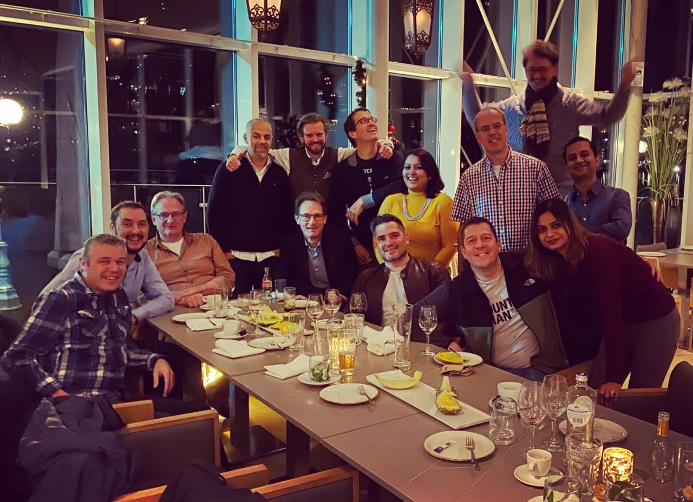
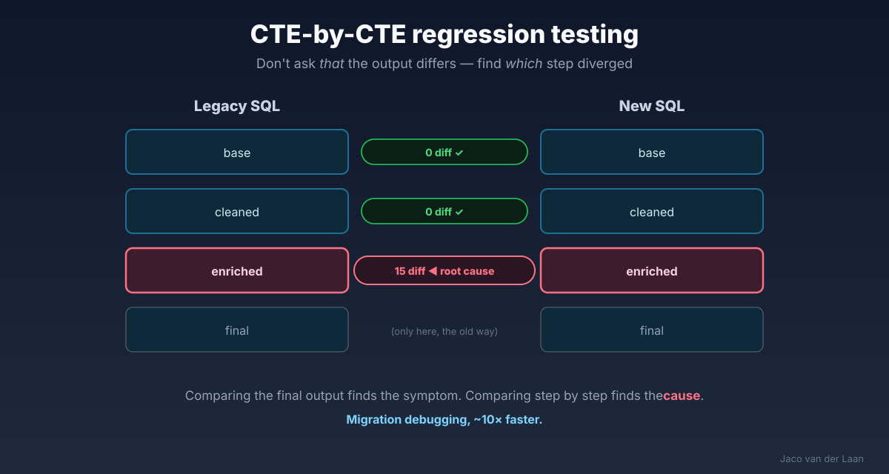

About
Data solution architect — metadata-driven platforms, knowledge architecture, and AI. I've spent my career making data trustworthy for institutions where reliability isn't optional. These days I point that same discipline at the AI layer.
What sets my work apart is a strong business focus. Good models start with the business, not the database — a conviction sharpened by Alec Sharp's business-oriented data modeling. I translate what the business actually means into structure a machine can rely on. That bridge — business meaning to reliable structure — is the whole job.
Beyond formal architecture, I tend to play innovation catalyst and architectural evangelist: introducing new ideas, challenging existing patterns, and turning concepts into practical frameworks teams can actually adopt. My current conviction — the future of data architecture is metadata-driven, automated and knowledge-centric.

Selected experience
Certifications: Certified Data Vault Data Modeler (Genesee Academy) · SnowPro Core & Snowflake CDC · dbt Developer (dbt Labs) · Microsoft Certified IT Professional — BI.
Selected work
My flagship: leading the model-driven data warehouse at de Volksbank & ASN — where MDDE was built — plus a signature SQL-migration engagement proven identical with CTE-by-CTE regression testing. I also founded and run the MDDE meetup (4.6★, 52 reviews), and the work has been covered in the trade press.

Standing on good shoulders
My approach is built on decades of thinking by people who shaped how we model, historize and govern data — from Hultgren, Roelant Vos and Alec Sharp to Inmon, Kimball and Len Silverston — plus collaborators I've built real things with, like CrossBreeze.
Beyond work
I draw inspiration from science, technology, design and the arts — from contemporary dance and opera to hiking and travel. That broad perspective is, I think, part of how I approach complex data problems: look for the pattern, find the structure, keep a sense of craft.
Two decades of making data trustworthy, now pointed at reliable AI.
Get in touch